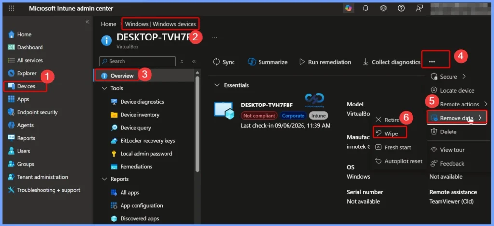
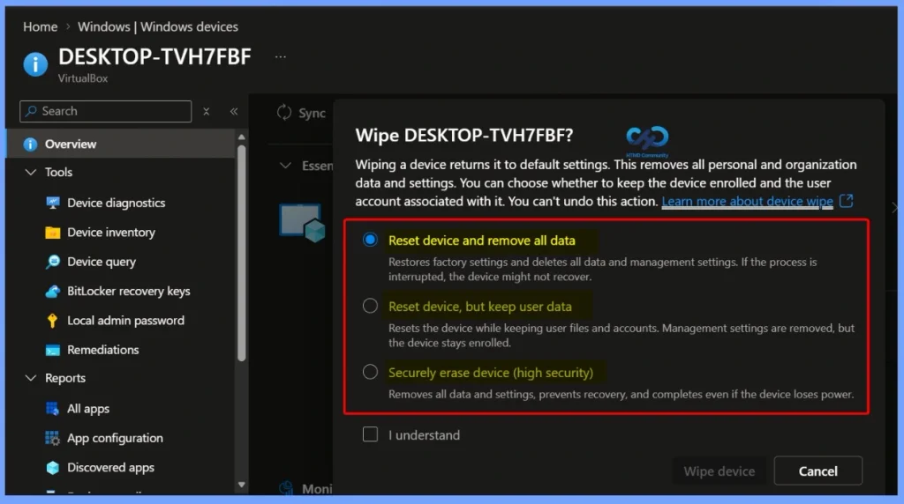

Key Takeaways
- Microsoft Intune Wipe Device: 3 New Options for Reset and Secure Erase
- Three Wipe Options – Intune now provides three choices to reset or securely erase Windows devices.
- A full factory reset deletes all user data, settings, and applications from the device.
- The device can be reset while preserving user files and accounts, with the device unenrolled from management.
- The high-security option is designed to make data recovery difficult and can continue even if power is interrupted.
- Admins can select the appropriate wipe option based on device reuse, troubleshooting, retirement, or security requirements.
Microsoft Intune Wipe Device: 3 New Options for Reset and Secure Erase! The Wipe action in Microsoft Intune supports many device platforms. These include Android Enterprise devices, AOSP, ChromeOS, iOS/iPadOS, macOS, tvOS, visionOS, and Windows devices. This means administrators can use the Wipe action across different types of managed devices.
Table of Content
Microsoft Intune Wipe Device: 3 New Options for Reset and Secure Erase
To perform the Wipe action, the administrator needs the correct Intune role and permissions. Built-in roles such as Help Desk Operator and School Administrator can perform this action. Organisations can also create a custom role with the required Remote tasks/Wipe permission.
- The account must also have permission to view and access managed devices in Intune.
- For a custom role, permissions such as Organization/Read and Managed devices/Read may be required.
- In simple terms, the administrator needs both Wipe permission and access to the managed device before acting.
| Steps |
|---|
| In the Microsoft Intune admin center |
| Select Devices > All devices or Windows Devices. |
| From the devices list, select a Windows device. |
| At the top of the device overview pane, find the 3 dots (…) icon. |
| Select Remove Data |
| Select Wipe |

Wiping a Device Returns it to Default Settings
Wiping a device returns it to default settings. This removes all personal and organization data and settings. You can choose whether to keep the device enrolled and the user account associated with it. You can’t undo this action.
- Reset device and remove all data
- Restores factory settings and deletes all data and management settings. If the process is interrupted, the device might not recover.
- Reset device, but keep user data
- Resets the device while keeping user files and accounts. Management settings are removed, but the device stays enrolled.
- Securely erase device (high security)
- Removes all data and settings, prevents recovery, and completes even if the device loses power.

Need Further Assistance or Have Technical Questions?
Join the LinkedIn Page and Telegram group to get the latest step-by-step guides and news updates. Join our Meetup Page to participate in User group meetings. Also, join the WhatsApp Community and the Whatsapp channel to get the latest news on Microsoft Technologies. We are there on Reddit as well.
Author
Anoop C Nair is Workplace Technology solution architect with 25+ years of experience in global enterprise organizations such as JP Morgan, Capgemini, etc. He is Microsoft Certified Trainer. Microsoft MVP from 2015 onwards for consecutive 11 years! He also conducts Intune and modern workplace tech training for enterprise organizations. He is Blogger, Speaker, and Founder of HTMD Community and HTMD Conference. His focus is on Device Management technologies such as Intune, Windows, Cloud PC. He writes about technologies like Intune, SCCM, Windows, Cloud PC, Windows, Entra, Microsoft Security.